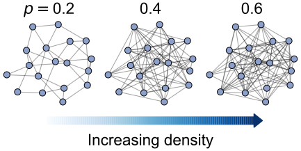
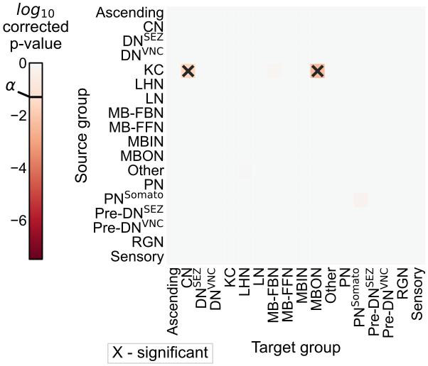

Previous slide Next slide Toggle fullscreen Open presenter view
Investigating the connectome of a larval Drosophila brain
These slides at:
Many goals of connectomics involve linking the connectome to other properties
Larval Drosophila allows access to many properties, e.g.,
Genetics
Activity
Eschbach et al. Nat. Neuro (2020)
Eschbach & Zlatic Curr. Op. Neurobio. (2020)
Klein et al. bioRxiv (2021)
Almeida-Carvalho et al. J. Experimental Bio. (2017)
Mapping a larval Drosophila brain connectome
Winding, Pedigo et al. bioRxiv (2022), Ohyama et al. Nature (2015)
Larval Drosophila brain connectome
~3k neurons, ~550K synaptic sites
Winding, Pedigo et al. bioRxiv (2022)
Outline
Larval connectome dataset
Flow and edge types
Connectivity-based cell types
Connectome comparison via network hypothesis testing
Pairing neurons across connectomes via graph matching
Ongoing extensions/applications
High level (mostly anatomical) cell types
Winding, Pedigo et al. bioRxiv (2022)
Sorting the network
Carmel et al. IEEE Vis. and Comp. Graphics (2004), Burkard et al. Assignment Problems (2009)
Quantifying high-level "feedforward/feedback"
Winding, Pedigo et al. bioRxiv (2022)
Morphology enables splitting axons/dendrites
Winding, Pedigo et al. bioRxiv (2022)
Outline
Larval connectome dataset
Flow and edge types
Connectivity-based cell types
Connectome comparison via network hypothesis testing
Pairing neurons across connectomes via graph matching
Ongoing extensions/applications
Stochastic block model
Each node is assigned to a group
B B B Edges generated independently according to these probabilities
Spectral embedding
Spectral decomposition of the adjacency matrix (or Laplacian)
Clustering on this representation is a consistent estimator of block model labels
Sussman et al. JASA (2012), Chung et al. Annual Review of Statistics (2021)
Neurons clustered by connectivity using recursive spectral clustering
Winding, Pedigo et al. bioRxiv (2022)
Cluster morphology
Discriminability:
P [ P[ P [ > > > ] 0.81 ] \approx 0.81 ] 0.81
Costa et al. Neuron (2016), Bridgeford et al. PLOS Comp. Bio. (2021)
Using models to evaluate cell type groupings
How well do these models generalize to the other side of the brain (let alone the next maggot)?
Bilateral symmetry
"This brain is bilaterally symmetric."
"What does that even mean? And how would we know if it wasn't?"
Are the left and right sides of this connectome
different ?
Outline
Larval connectome dataset
Connectome comparison via network hypothesis testing
Pairing neurons across connectomes via graph matching
Ongoing extensions/applications
Are these populations different?
Known as two-sample testing
Y ( 1 ) F ( 1 ) \color{#66c2a5} Y^{(1)} \sim F^{(1)} Y ( 1 ) F ( 1 ) Y ( 2 ) F ( 2 ) \color{#fc8d62} Y^{(2)} \sim F^{(2)} Y ( 2 ) F ( 2 ) H 0 : F ( 1 ) = F ( 2 ) H_0: \color{#66c2a5} F^{(1)} \color{black} = \color{#fc8d62} F^{(2)} H 0 : F ( 1 ) = F ( 2 ) H A : F ( 1 ) F ( 2 ) H_A: \color{#66c2a5} F^{(1)} \color{black} \neq \color{#fc8d62} F^{(2)} H A : F ( 1 ) = F ( 2 )
Are these networks different?
Want a two-network-sample test!
A ( L ) F ( L ) A^{(L)} \sim F^{(L)} A ( L ) F ( L ) , A ( R ) F ( R ) A^{(R)} \sim F^{(R)} A ( R ) F ( R ) H 0 : F ( L ) = F ( R ) H_0: \color{#66c2a5} F^{(L)} \color{black} = \color{#fc8d62}F^{(R)} H 0 : F ( L ) = F ( R ) H A : F ( L ) F ( R ) H_A: \color{#66c2a5} F^{(L)} \color{black} \neq \color{#fc8d62} F^{(R)} H A : F ( L ) = F ( R )
Pedigo et al. bioRxiv (2022)
Assumptions
Know the direction of synapses, so network is directed
For simplicity (for now), consider networks to be unweighted
For simplicity (for now), consider the left \rightarrow and right \rightarrow (ipsilateral ) connections
Not going to assume any nodes are matched
Erdos-Renyi model
All edges are independent
All edges generated with the same probability, p p p

Detect a difference in density
p-value < 1 0 22 10^{-22} 1 0 22
Pedigo et al. bioRxiv (2022)
Connection probabilities between groups
Winding, Pedigo et al. bioRxiv (2022), Pedigo et al. bioRxiv (2022)
Group connection test
Pedigo et al. bioRxiv (2022)
Detect differences in group connection probabilities
6 group-to-group connections are significantly different (after multiple comparisons correction)
Overall test (comparing all blocks):< 1 0 7 <10^{-7} < 1 0 7
Pedigo et al. bioRxiv (2022)
Should we be surprised?
Already saw that even the overall densities were different
For all significant comparisons, probabilities on the right hemisphere were higher
Maybe the right is just a "scaled up" version of the left?
H 0 : B ( L ) = c B ( R ) H_0: \color{#66c2a5}B^{(L)} \color{black} = c \color{#fc8d62}B^{(R)} H 0 : B ( L ) = c B ( R ) c c c p ( L ) p ( R ) \frac{\color{#66c2a5} p^{(L)}}{\color{#fc8d62} p^{(R)}} p ( R ) p ( L )
Pedigo et al. bioRxiv (2022)
After adjusting for density, differences are in KCs

Overall p-value: < 1 0 2 <10^{-2} < 1 0 2
Pedigo et al. bioRxiv (2022)
To sum up...
"This brain is bilaterally symmetric."
Depends on what you mean...
With Kenyon cells
Model
H 0 H_0 H 0 H A H_A \neq H A = p-value
ER p ( L ) = p ( R ) \color{#66c2a5} p^{(L)} \color{black} = \color{#fc8d62}p^{(R)} p ( L ) = p ( R ) < 1 0 23 {<}10^{-23} < 1 0 23
SBM B ( L ) = B ( R ) \color{#66c2a5} B^{(L)} \color{black} = \color{#fc8d62} B^{(R)} B ( L ) = B ( R ) < 1 0 7 {<}10^{-7} < 1 0 7
daSBM B ( L ) = c B ( R ) \color{#66c2a5}B^{(L)} \color{black} = c \color{#fc8d62}B^{(R)} B ( L ) = c B ( R ) < 1 0 2 {<}10^{-2} < 1 0 2
Without Kenyon cells
Model
H 0 H_0 H 0 H A H_A \neq H A = p-value
ER p ( L ) = p ( R ) \color{#66c2a5} p^{(L)} \color{black} = \color{#fc8d62}p^{(R)} p ( L ) = p ( R ) < 1 0 26 {<}10^{-26} < 1 0 26
SBM B ( L ) = B ( R ) \color{#66c2a5} B^{(L)} \color{black} = \color{#fc8d62} B^{(R)} B ( L ) = B ( R ) < 1 0 2 {<}10^{-2} < 1 0 2
daSBM B ( L ) = c B ( R ) \color{#66c2a5}B^{(L)} \color{black} = c \color{#fc8d62}B^{(R)} B ( L ) = c B ( R ) 0.51 \approx 0.51 0.51
Pedigo et al. bioRxiv (2022)
Examining the effect of edge weights
Pedigo et al. bioRxiv (2022)
Even high synapse count networks show asymmetry
Pedigo et al. bioRxiv (2022)
High input percentage networks show no asymmetry
Pedigo et al. bioRxiv (2022)
Outline
Larval connectome dataset
Connectome comparison via network hypothesis testing
Pairing neurons across connectomes via graph matching
Ongoing extensions/applications
Bilaterally homologous neuron pairs
We believe a matching exists!
Eschbach et al. eLife (2021)
What is graph matching?
How do we measure network overlap?
min P P A 1 P A 2 P T reordered A 2 F 2 distancebetweenadj.mats. \min_{P \in \mathcal{P}} \underbrace{\|A_1 - \overbrace{PA_2P^T}^{\text{reordered } A_2}\|_F^2}_{\text{distance between adj. mats.}} min P P distancebetweenadj.mats. A 1 P A 2 P T reordered A 2 F 2 where P \mathcal{P} P
Measures the number of edge disagreements for unweighted networks,
Norm of edge disagreements for weighted networks
How do we do graph matching?
Relax the problem to a continuos space
Convex hull of permutation matrices
Minimize a linear approximation of objective function (repeat)
Project back to the closest permutation matrix
Vogelstein et al. PLOS One (2015)
Matching (by connectivity only) performs fairly well
With "vanilla" graph matching: ~80% correct (according to expert annotator)
Many ways to try to improve on this...
Edge types allow for "multilayer" graph matching
Partial knowledge of the matching (seeds)
Morphology (e.g. NBLAST)
Thus far, we've not used the contralateral connections
These are about 1/3 of the edges in the brain!
Pantazis et al. Applied Network Science (2022), Fishkind et al. Pattern Recognition (2019)
From graph matching to bisected graph matching
Pedigo et al. bioRxiv (2022)
Contralateral connections are helpful!
Pedigo et al. bioRxiv (2022)
Performance improvement on the full brain
Outline
Larval connectome dataset
Connectome comparison via network hypothesis testing
Pairing neurons across connectomes via graph matching
Ongoing extensions/applications
Comparative connectomics
Map connectomes from related individuals/organisms which may differ in feature X X X
Compare connectomes
Understand how X X X
Comparative connectomics across experience, sex and species is a key next step.
With comparative connectomics, the search for neural circuit architectures common across species or independently converged into an optimal layout is now possible.
Why is comparative connectomics hard?
How do we know whether a proposed experiment could even hope to answer our questions? How powerful is comparative connectomics?
A hypothetical difference we want to detect...
Start from some subgraph in the connectome, A A A
Perturb a copy of it, B B B
Test for differences between A A A B B B
Pairs facilitate more powerful tests
Summary
Characterized "feedforwardness" of this connectome
Estimated cell types by connectivity
Model-based network comparison enables testing (and refining) hypotheses about connectomes
Graph matching can pair neurons across datasets
Aim to apply these (and other) tools to: - Inform the design of future comparative experiments, - Make inferences from connectome comparisons!
Acknowledgements
Team
Tracers who contributed to larva connectome, Heather Patsolic, Youngser Park, NeuroData lab, Microsoft Research
Funding
NSF Graduate Research Fellowship (B.D.P.), NSF CAREER Award (J.T.V.), NSF NeuroNex Award (J.T.V and C.E.P.), NIH BRAIN Initiative (J.T.V.)
### [tinyurl.com/princeton-bilarva](https://tinyurl.com/princeton-bilarva)
---
# Connectomics is useful...
TODO: (5) plot of "connectome prevalence over time"
TODO: (5) highlight one example fly result (? maybe central complex)
Timing: ~6 min
---
# What do we do with these datasets once we have them?
- Characterizing network structure, e.g.,
- How could signals travel on this network, from sensory inputs to motor outputs?
- What cells have similar patterns of connectivity?
- Hypothesis testing
- Connectome (network) as an object that we want to "do inference" on
---
# Connectome $\leftrightarrow$ {development, genetics}
> ... we selectively altered the location or activity of [...] neurons and generated new EM volumes of the manipulated samples **to investigate the effects on connectivity**.
*Emphasis added*


---
# This split induces 4 graphs (or layers)
<div class="columns">
<div>

</div>
<div>

</div>
</div>
# What are these different "channels" doing?
<div class="columns">
<div>

</div>
<div>
</div>
</div>
---
# Sorting the network

---
# Comparing independently sorted "channels"

---
# Edge reciprocity

_footer: Winding, Pedigo et al. bioRxiv (2022)
---
# Spectral clustering proceedure
- mention embedding
- cluster - when to stop
_footer: Winding, Pedigo et al. bioRxiv (2022)
TODO: (2) diagram/describe SBM cross validation

- Clustering nodes corresponds with inferring groups in a stochastic block model (DCSBM)
> -Neuroscientists
> -Us


> -Neuroscientists
<div class='columns'>
<div>
## Synapse count thresholding

</div>
<div>
## Input proportion thresholding
</div>
</div>
TODO: (3) make a figure diagraming a permutation/matching of nodes
<style scoped>
h1, h2 {
padding-top: 140px;
justify-content: center;
text-align: center;
}
</style>
---
# Testing for "stereotypy" in edge structure
Is matching stronger than expected under some model of independent networks?
<div class="columns">
<div>

</div>
<div>

</div>
</div>
_footer: Eichler et al. Nature (2017), Fishkind et al. Applied Network Science (2021)
- ~~Data are networks~~
- Data are networks with rich attributes
- Data will always have noise
- "Experimental noise"
- "Biological noise"
- Data are big (and getting bigger)
---
# Ensuring robustness to different alternatives

<div class="columns">
<div>
## Larva brain connectome
</div>
<div>
## Model-based testing
[](http://docs.neurodata.io/bilateral-connectome/)
## Improved matching
[](http://docs.neurodata.io/bilateral-connectome/)
(Or for WIP final implementation see
[github.com/microsoft/graspologic/pull/960](github.com/microsoft/graspologic/pull/960))
## graspologic
<span> </span>
<span> </span>
<span> </span>
<span> </span>
<style scoped>
section {
justify-content: center;
text-align: center;
}
h1 {
justify-content: left;
text-align: left;
}
</style>